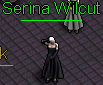
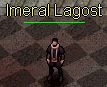
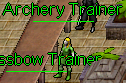

Valinor
Valinor


- 1. Duke Randolf
- 2. Kumba Northern
- 3. Mary Locksley
- 4. Douglas Logan
- 5. Serina Wilcut
- 6. Shady Looking Man
- 7. Paula Duncan
- 8. Imeral Lagost
- 9. Lorlee Eclain
- 10. Captain of the Guard
- 11. Curtis Leabu
- 12. A Strange Looking Man
- 13. Davey Logan
- 14. Timothy Jager
- 15. A Young Maid
Quest
Welcome To Ashen Empires
| Difficulty | Skills |
|---|---|
| Apprentice | Combat |
| NPC Quest Start | Monster | Reward |
|---|---|---|
| Duke Randolf |
Bats (lvl 1) Snakes (lvl 2) |
">

 ">
">


|
Duke Randolf welcomes you to the Island of Valinor. He explains to you that they have been under siege by all forms of evil. He needs all able-bodies to help defend the city, but you are quite ill-prepared to face the dangers that lie ahead.
- 5 Hardtacks
- 2 Torches
- 225 Experience Pool experience may very
QUEST RECEIVED: Welcome to Ashen Empires, Speak to Lord Trembley on the shores of Valinor.
 Speak to Lord Trembley. He is surprised that you are alive being washed ashore. He explains about how to open your Equipment screen by pressing E
on your keyboard. You can examine yourself and assign your orbs in strength, Dexterity, Intelligence or Constitution. He asks what type of person you are; Warrior, Crafter or Mage
Your choice will determin the cothing you are giving.
Speak to Lord Trembley. He is surprised that you are alive being washed ashore. He explains about how to open your Equipment screen by pressing E
on your keyboard. You can examine yourself and assign your orbs in strength, Dexterity, Intelligence or Constitution. He asks what type of person you are; Warrior, Crafter or Mage
Your choice will determin the cothing you are giving.
- Tunic of the Island Guard (Warrior)
- Smock of the Island Guard (Crafter)
- Robe of the Island Guard (Mage)
- Pants
- Sextant
- 1,125 Experience Pool experience may very
After chosing your profession he ask you to go speak to Sage Haritod
QUEST RECEIVED: Welcome to Ashen Empires, Speak to Sage Haritod.
Speak to Sage Haritod. He explains how to open your quest log by pressing L on your keyboard. Sage Haritod has many options to explan the game to you. You can continue though many of his dilogue or continue on. He tells you to speak to one of the Weapon, Magic, or Tradeskill trainers to receive your next task. The weapon trainers are to the right, magic trainers are down the stairs and tradeskill trainers are to the left and found around the city.
- 450 Experience Pool experience may very
QUEST RECEIVED: Welcome to Ashen Empires, Speak to Weapon, Magic or Tradeskill Trainer.
Once you speak to one of the trainers you will begin a new Quest route for that trainer. You will also recieve the next quest in the Welcome to Ashen Empires quest.
QUEST RECEIVED: Welcome to Ashen Empires, Speak to the Captain of the Guard.
Speak to the Captain of the Guard and he will give you a sack to carry your supplies.
- Large Knapsack
- 450 Experience Pool experience may very
He will tell you of a problem outside the walls. The bat and snake population has gotten out of control. He want's you to slay 25 of these vermin to keep them in check.
QUEST RECEIVED: Welcome to Ashen Empires, Keep the vermin in check - kill 25 bats or snakes.

 Head outside the walls and kill 25 bats or snakes. The quest will keep track of your kills in your chat window and your quest log. Once you kill the 25th vermin you will receve a quest update.
Head outside the walls and kill 25 bats or snakes. The quest will keep track of your kills in your chat window and your quest log. Once you kill the 25th vermin you will receve a quest update.
QUEST UPDATE: You have rid the land of 25 foul vermin for the Captain of the Guard!
QUEST RECEIVED: Welcome to Ashen Empires, Report back to the captain of the Guard.
Return to the Captain of the Guard for your reward.
- Boots of the Island Guard
- 450 Experience Pool experience may very
Retrun to him if you would like another task.
QUEST COMPLETE
Kumba's Pendant
| Difficulty | Skills |
|---|---|
| Apprentice | Combat |
| NPC Quest Start | Monster | Reward |
|---|---|---|
| Kumba Northern | Spider (lvl 3) | "> |
 Kumba Northern was out looking for a suitable place to plant his crops when he dropped his pendant,
before he could reach down to pick it up, a spider picked it up and ran down a hole.
Kumba Northern was out looking for a suitable place to plant his crops when he dropped his pendant,
before he could reach down to pick it up, a spider picked it up and ran down a hole.
QUEST RECEIVED: Kumba's Pendant Find Kumba Northern's Pendant. It was taken into a hole by a spider
Adverture out and kill spiders untill you get an update that you have found the pendant.
QUEST UPDATE: You found Kumba's Pendant! Return to him inside the Valinor Castle.
Speak to Kumba Northern to recieve your reward.
- Moth Riddled Cloak
- 450 Experience Pool experience may very
Quest Complete
Strange Fascination
| Difficulty | Skills | Items |
|---|---|---|
| Apprentice | Combat | Ear of bat |
| NPC Quest Start | Monster | Reward |
|---|---|---|
| Mary Locksley | Bat (lvl 1) | "> |
 Mary Locksley is very fascinated with bat ears. She needs you to bring her 10 of their ears and she will make you a pretty necklace.
Mary Locksley is very fascinated with bat ears. She needs you to bring her 10 of their ears and she will make you a pretty necklace.
QUEST RECEIVED: Strange Fascination, Bring Mary Locksley 10 Ear of bat
Adverture out and kill bats untill you get an update that you have collected enough Ear of Bat.
QUEST UPDATE: You have collected enough Ear of Bat to complete the quest. (10/10)
Speak to Mary Locksley to recieve your reward.
- Bat Ear Necklace
- 450 Experience Pool experience may very
Quest Complete
The Necklace
| Difficulty | Skills | Items |
|---|---|---|
| Apprentice | Combat | Triddle Shell |
| NPC Quest Start | Monster | Reward |
|---|---|---|
| Douglas Logan | Triddle (lvl 1) |

|
 Douglas Logan is looking for someone to gather 10 triddle shells to make a necklace for this lovely lady.
Douglas Logan is looking for someone to gather 10 triddle shells to make a necklace for this lovely lady.
QUEST RECEIVED: The Necklace, You met Douglas Logan in the Valinor Cellar, who asked you to get 10 Triddle Shells.
 Adverture out and kill triddles untill you get an update that you have collected enough triddle shells.
Adverture out and kill triddles untill you get an update that you have collected enough triddle shells.
QUEST UPDATE: You have collected enough Triddle Shell to complete the quest. (10/10)
Speak to Douglas Logan to recieve your reward.
- Triddle Shell Armor
- 900 Experience Pool experience may very
Quest Complete
Our Little Spider Problem
| Difficulty | Skills |
|---|---|
| Apprentice | Combat |
| NPC Quest Start | Monster | Reward |
|---|---|---|
| Serina Wilcut | Dredge Spiders (lvl 2) | 100 Gold |

Serina Wilcut is needing your help keeping the lower cellars free of spiders for her husband. He was called into service to fight the new goblin menace.
She is dreading that someone will soon come take his job out from under him. She needs you to slay 10 dredge spiders and pay you his monthly salary.
QUEST RECEIVED: Our Little spider Problem, Kill 10 Dredge Spiders in valinor cellar.
 Adverture downstairs and slay dredge spiders untill you get an update that you have killed enough
Adverture downstairs and slay dredge spiders untill you get an update that you have killed enough
QUEST RECEIVED: Our Little Spider Problem 10 Dredge Spiders killed. return to Serina for your reward.
Speak to Serina Wilcut for your reward.
- 100 Gold
- 562 Experience Pool experience may very
Quest Complete
The Ring
| Difficulty | Skills |
|---|---|
| Apprentice | None |
| NPC Quest Start | Reward |
|---|---|
| Shady Looking Man | "> |
 The Shady Looking Man is in a bind and needs your help. His grandmother's ring was stolen from him and needs you to get it back for him for sentimental reasons.
The Eastern Gate Guards has recovered it from the thief, and placed it inside the evidence locker. If you could recover it, his old Auntie would be very thankful.
The Shady Looking Man is in a bind and needs your help. His grandmother's ring was stolen from him and needs you to get it back for him for sentimental reasons.
The Eastern Gate Guards has recovered it from the thief, and placed it inside the evidence locker. If you could recover it, his old Auntie would be very thankful.
QUEST RECEIVED: The Ring, You agreed to help the shad looking man recover the stolen ring from the Eastern Gate Guard house.
 Head over to the Eastern Gate and serach the evidence locker. Searching the evidence locker cause the Eastern Gate Lieutenant to speak. He can't let just anyone have that ring. He needs a signed receipt for it.
They are holding the stolen ring for Sarah Bent. You'll need to talk to her and have her sign for the item before it can be released.
Head over to the Eastern Gate and serach the evidence locker. Searching the evidence locker cause the Eastern Gate Lieutenant to speak. He can't let just anyone have that ring. He needs a signed receipt for it.
They are holding the stolen ring for Sarah Bent. You'll need to talk to her and have her sign for the item before it can be released.
QUEST RECEIVED: The Ring, The Eastern Gate Lieutenant needs a signed receipt from Sarah Bent.
Find Sarah Bent in the Alchimist shop in Valinor Castle. She will be excited that her ring has been found and will sign the receipt for it.
- 175 Experience Pool experience may very
QUEST RECEIVED: The Ring, Retrieve Sarah's lost ring from the evidence locker.
Talk to the Eastern Gate Lieutenant, he will agree to let you take the ring from the evidence locker.
You begin searching the evidence locker...
ITEM: RECEIVED: Dull Emerald Ring
He trusts you will return the ring to its proper owner.
QUEST RECEIVED: The Ring, Return the ring to its rightful owner.
- OPTION: 1 Give the ring to the Shady Looking Man
- OPTION: 2 Give the ring to the Sarah Bent
OPTION: 1
Shandy looking Man: Ah! the ring! I've been searching for that for months. My dear, sweet mum will be so happy that I've found it. Speak to him again he will say he made quite a fortune by selling it... Uhh... I mean, my wife was very happy to have it back...
- 25 Gold
- 700 Experience Pool experience may very
OPTION: 2
Sarah Bent: You found my ring! I am so happy. Please hand it to me. I have a small reward for you. She is very happy you found her Engagement Ring.
- 50 Gold
- Sarah's Promise Ring
- 900 Experience Pool experience may very
You returned the ring to Sarah Bent and were rewarded with Sarah's Promise Ring.
Quest Complete
Proof
| Difficulty | Skills |
|---|---|
| Apprentice | Combat |
| NPC Quest Start | Monster | Reward |
|---|---|---|
| Paula Duncan |
Goblin Runt (lvl 3) Goblin Worker (lvl 4) Goblin Shaman Runt (lvl 5) |
"> |
 Paula Duncan Has never seen goblins in her life. She says to you if they do exist then bring her a goblin scalp to prove it.
Paula Duncan Has never seen goblins in her life. She says to you if they do exist then bring her a goblin scalp to prove it.
QUEST RECEIVED: Proof, Bring a goblin scalp to Paula Duncan to prove to her that goblins are real..

Adverture south west near the coast to find goblins. You can kill either the Goblin Runt, Goblin Worker, or the Goblin Shaman. As you kill them you will receive a message each time you do not scalp a goblin.
You attempt to scalp the goblin, but botch the job horrifically...
When you succeed at scalping the goblin you will recieved a new quest update.
QUEST RECEIVED: Proof, You collected a Goblin Scalp! Bring it to Paula Duncan.
Paula Duncan is amazed that goblins do exist. She rewards you with an item she found in her well.
- Totem of the Wolf Pup
- 1200 Experience Pool experience may very
Quest Complete
Frump the Cook
| Difficulty | Skills |
|---|---|
| Apprentice | Combat |
| NPC Quest Start | Monster | Reward |
|---|---|---|
| Imeral Lagost | Frump the Cook (lvl 7) |

|

Imeral Lagost Has a bit of a problem. A goblin by the name of Frump the Cook has stolen some of his special ingredients for a pie
that he is to make for Lord Trembley. He has finally traced down the scamp. He is somewhere down in this dungeon. He wants you to slay him. He suggest you bring
help to defeat him.
QUEST RECEIVED: Frump the Cook, Find and kill Frump the Cook for Imeral Lagost.

Frump is loacated at the south east part of this dungeon. You can see the X on the map. You will encounter all types of goblins on the way there. Goblin Runts,
Goblin Shaman Runts, Young Hobgoblins. Once you defeat Frump you will be updated with the next part of the quest.
QUEST UPDATE: Frump the Cook, Return the pie ingredients to Imeral Lagost.
Imeral Lagost Is amazed you took down Frump the Cook. He rewards you with an amulet he found in Frump's empty slop bucket.
- Frump's Amulet
- 5,250 Experience Pool experience may very
Quest Complete
Cloaks to Die For
| Difficulty | Skills |
|---|---|
| Apprentice | Combat |
| NPC Quest Start | Monster | Reward |
|---|---|---|
| Lorlee Eclain | Rancid Zombie (lvl 7) |

|
Lorlee Eclain makes exquisite clothing from very unusual materials. She is making cloaks for the nobles in Silvest from Zombie Skins.
If you could collect the skins for her that would be simply fabulous! She is not fit for adventuring lifestyle.
QUEST RECEIVED: Cloaks To Die For, Bring Lorlee Eclain of Valinor 10 Zombie Skins (10/10)
Adventure to west and kill Rancid Zombie and collect 10 Zombie Skins.
QUEST UPDATE: You have collected enough Zombie Skin to complete the quest.
Return to Lorlee Eclain she will have a sample of her work for you to try. It should help you in your defense from the undead, even though
the color still needs some work.
- Zombie Skin Cloak
- 2,625 Experience Pool experience may very
You received a Zombie Skin Cloak in exchange for the Zombie Skins.
Quest Complete
War
| Difficulty | Skills |
|---|---|
| Apprentice | Combat |
| NPC Quest Start | Monster | Reward |
|---|---|---|
| Captain of the Guard |
Goblin Runt (lvl 3) Small Skeleton (lvl ) BoneSnarl (lvl ) |

|
Capatain of the Guard is in urgent need of a report on the condition of the Southern Guard Post. He has not heard from the Guard in command in quite some time.
Venture south along the road to the Southern Guard post and speak to Guard Calaway.
QUEST RECEIVED: War, Report to Guard Calaway at the Southern Guard Outpost.
 Speak to Guard Calaway he will say they are find here, but is worried about the regiment he sent to defend the bridge to the south.
venture south and check on his men there. Get a full report from Sergeant Dawson.
Speak to Guard Calaway he will say they are find here, but is worried about the regiment he sent to defend the bridge to the south.
venture south and check on his men there. Get a full report from Sergeant Dawson.
QUEST RECEIVED: War, Get Sergeant Dawson's report from the South Bridge.
- 300 Experience Pool experience may very
 Speak to Sergeant Dawson for his report. He says the goblins descended on them and killed all his men. You must tell the
Captain back in the city to send reinforcements.
Speak to Sergeant Dawson for his report. He says the goblins descended on them and killed all his men. You must tell the
Captain back in the city to send reinforcements.
QUEST RECEIVED: War, Report the goblin attack to the Captain of the Guard.
Speak to Captain of the Guard inform him of the attack on the southern bridge. He has no men to send to help.
We can't leave the city undefended. He ask you to exact revenge on the foul horde. He ask you to kill goblins untill you obtain the title of Novice Killer of Goblins
QUEST RECEIVED: War, Kill 25 Goblins to become a Novice Killer of Goblins.
- 600 Experience Pool experience may very
Cross the south bridge and kill 25 goblins untill you become Novice Killer of Goblins.
You have proven yourself against the Goblins, Speak with the Captain of the Guard.
The Captain of the Guard will inform you that he has finally gotten some reinforcements to take care of this goblin problem once and for all.
Report to duty with Guard Calaway at the Southern Guard Post to help with the elimination of the goblins.
QUEST RECEIVED: War, Report to Guard Calaway at the Southern Guard Post.
Report to Guard Calaway to begin the raid on the goblins to the south. This will be some heavy action, take this helm.
- Helm of the Island Guard

Guard Calaway will say CHARGE and a group of Island Guards will spawn and move to the south. At the bridge there will be a group of Goblin Runts heading north to clash with the Island Guards. After the battle there is not an update to go tell the Captain of the Guard. Needs to be an update (QUEST RECEIVED: War, Report to the Captain of the Guard after the raid on the goblins. )
The Captain of the Guard will congratulate you with the job well done. Now that you have proven yourself to be a competent warrior,
he could use your help in other parts of the island. He has reports that the Eastern Gate has come uner attack. Report there and help with the situation.
QUEST RECEIVED: War, Report to the guards at the Eastern Gate.
Speak to Eastern Gate Lieutenant. He will see if you measure up to the task. He has reports of the dead rissing from the grave to haunt
the lands to the east and south. Investigate this plague on the land.
QUEST RECEIVED: War, Prove yourself to the Eastern Gate Lieutenant. Kill 25 undead to become novice killer of the undead.

Head though the eastern gate and kill the undead in the area till you receive the message that you are
Novice Killer of the Undead
QUEST RECEIVED: War, You have proven yourself against the Undead. Return to the Eastern Gate Lieutenant!.
Speak to Eastern Gate Lieutenant. He agrees the Captain was right about you. You might just be the person he is looking for after all. The leader of the undead
menace is a skeleton named BoneSnarl. Find Bonesnarl's lair and defeat him. Ater we will celebrate.
QUEST RECEIVED: War, You have proven yourself against the Undead. Find Bonesnarl's Lair and defeat him.
- 3,937 Experience pool experience may very
 BoneSnarl's lair is southeast from the gate. Around the mountain back to the northwest. Follow the mountains north edge to the west till you get to some ruins.
Go down the stairs to enter BoneSnarl's lair. This is a two story dungeon. The first area is a strait forward patch, but you can get turned around and go in a circle.
The next level can be a bit more complicated. See the maps above to navigate this dungeon. There are many undead you will need to fight all the way to BoneSnarl.
This will be the one of the hardest fights you will have on this island. It is recommended you bring help.
BoneSnarl's lair is southeast from the gate. Around the mountain back to the northwest. Follow the mountains north edge to the west till you get to some ruins.
Go down the stairs to enter BoneSnarl's lair. This is a two story dungeon. The first area is a strait forward patch, but you can get turned around and go in a circle.
The next level can be a bit more complicated. See the maps above to navigate this dungeon. There are many undead you will need to fight all the way to BoneSnarl.
This will be the one of the hardest fights you will have on this island. It is recommended you bring help.
QUEST RECEIVED: War, You defeated Bonesnarl! Return the Eastern Gate Lieutenant.
Speak to Eastern Gate Lieutenant. You took down BoneSnarl! Jolly good, that wretch was causing us all sorts of problems! Report back to the Captain of the Guard I think you have accomplished all that you can here.
- 5,250 Experience pool experience may very
Speak to Captain of the Guard. Good to hear that BoneSnarl has been dealt with! He suggest that it is time for you to leave the island to adventure on the mainland. To leave the island simply walk onto the magic transporter located inside the city temple.
- ? Experience pool experience may very
The captain of the Guard wishes you well in your adventures.
Quest Complete
Curtis's Secret
| Difficulty | Item |
|---|---|
| Apprentice | Full Milk Bottle  |
| NPC Quest Start | Reward |
|---|---|
| Curtis Leabu |
Old Worn Pack "> |
 Curtis Leabu has a secret but he wont tell you untill you give him a bottle of milk.
Curtis Leabu has a secret but he wont tell you untill you give him a bottle of milk.
QUEST RECEIVED: Curtis's Secret, Bring 1 bottle of milk to Curtis Leabu.
Head back into the castle to the Provisioner Shop Speak to Whiliam Rosen to purchase an Empty Milk Bottle.
Once you have the Empty Milk Bottle head out the west gate to Valinor Grazing Area and find a dairy cow.
Click on the dairy cow then on the Empty Milk Bottle to fill it with milk. Return to Curtis Leabu.
When you speak to Curtis Leabu he will ask you to give him the bottle of milk
and he will tell you the secret. Drag and drop the Full Bottle of Milk on to Curtis Leabu
QUEST UPDATE: Curtis's Secret, Check under a strange rock near the north wall of Valinor
- 350 Experience Pool experience may very
After you give him his milk he will tell you of an old man putting something under a strange rock.
Just north of Curtis Leabu next to the north wall you will find a strange rock,
click on the strange rock to receive your reward.
- Old Worn Pack
- 525 Experience pool experience may very
You found an Old Worn Pack under the strange rock.
Quest Complete
Strange Request
| Difficulty | Skills | Item |
|---|---|---|
| Apprentice | Combat |
| NPC Quest Start | Monster | Reward |
|---|---|---|
| A Strange Looking Man | Marsh Light (lvl 8) |

|
 Speak to A Strange Looking Man He ask if Duke Randolf sent you to look for him. Ask him if the hunting is good.
He says he not here to hunt but if your interested you can help. He is in need of 15 Strange Dust from the Marsh Lights, but the swamps of been over ran by a large number of undead.
He will pay very handsomely for them.
Speak to A Strange Looking Man He ask if Duke Randolf sent you to look for him. Ask him if the hunting is good.
He says he not here to hunt but if your interested you can help. He is in need of 15 Strange Dust from the Marsh Lights, but the swamps of been over ran by a large number of undead.
He will pay very handsomely for them.
QUEST RECEIVED: Strange Request, Bring the strange looking man 15 Strange Dusts
 Head south to the swamp and kill Marsh Lights untill you have collected 15 Strange Dust.
Head south to the swamp and kill Marsh Lights untill you have collected 15 Strange Dust.
QUEST UPDATE: You have collected enough Strange Dust to complete the quest.
Return to A Strange Looking Man to receve your reward. He will ask if you have the Strange Dust he requested.
- Marsh Soaked Boots
- 3,937 Experience pool experience may very
Quest Complete
Davey's Rattle
| Difficulty | Skills |
|---|---|
| Apprentice | Combat |
| NPC Quest Start | Monster | Reward |
|---|---|---|
| Davey Logan | Snakes (lvl 2) |

|
Speak to Davey Logan, he is crying about a lost rattle.
His dad killed a snake for that rattle. He ask you to go kill a snake to get him a new rattle.
QUEST RECEIVED: Davey's Rattle, Kill snakes to find a new rattle for Davey Logan
South out side of the walls you will find snakes. Kill them untill you get an update.
QUEST UPDATE: You found a rattle for Davey Logan
QUEST UPDATE: Davey's Rattle, You found a rattle for Davey Logan!
Return to Davey Logan, he is excited you have found his rattle. He found a pair of pants when his Aunt Nessie came to visit. He give them to you as a reward since they are no fun to play with.
- Spider Silk Leggins
- 450 Experience pool experience may very
Quest Complete
A Goblin Problem
| Difficulty | Skills |
|---|---|
| Apprentice | None |
| NPC Quest Start | Reward |
|---|---|
| Timothy Jager | "> |
Speak to Timothy Jager, He has a bit of a problem.
Supplies intended for the southern outpost have gone unaccounted for. There have been a bit of a 'Goblin Problem'
in the area. He wants you to locate and return the supplies.
QUEST RECEIVED: A Goblin Problem, Timothy Jager asked you to locate a shipment of supplies sent to the southern outpost.


 The map shows the three locations you will need to find all Shipment Crates. Head out side the walls to the southwest past the southern outpost. At the bridge, in the Southern Passage Guardhouse that in in ruins, is the first Shipment Crate.
The map shows the three locations you will need to find all Shipment Crates. Head out side the walls to the southwest past the southern outpost. At the bridge, in the Southern Passage Guardhouse that in in ruins, is the first Shipment Crate.
QUEST UPDATE: You have located one of the three Shipment Crates for Timothy Jager
Keep following the path south then west to find Shipment Crate 2 wtih in the ruins of Lanore.
QUEST UPDATE: You have located one of the three Shipment Crates for Timothy Jager
Circle around to the west side of the mountain to find Shipment Crate 3.
QUEST UPDATE: You have located the last Shipment Crate for Timothy Jager
Return to Timothy Jager
QUEST UPDATE: A Goblin Problem, Return to Timothy Jager
Return to Timothy Jager, he thanks you for returning the supplies. The town can use these supplies in this time of need. He rewards you with a small amount of gold and a Belt recovered from the supply crates.
- 50 Gold
- Supply Runner's Belt
- 1,050 Experience pool experience may very
You earned a Supply Runner's Belt for returning the Supply Crates to Timothy Jager.
Quest Complete
Hell Hath no Fury
| Difficulty | Skills |
|---|---|
| Apprentice | None |
| NPC Quest Start | Reward |
|---|---|
| A Young Maid | "> |
Speak to A Young Maid, She is a jealous of Sarah Bent for taking her man.
She would give anything for her Promise Ring that he gave her.
Agree to get the Promise Ring.
QUEST RECEIVED: Hell Hath no Fury, Bring Sarah's Promise Ring to the Young Maid in Valinor
You must have completed the quest "The Ring" and chose Option: 2 to receive Sarah's Promise Ring. Once you have the ring bring it to A Young Maid to receive your reward. Drag the ring on to her. She gloats how she will wear it when she goes into Sarah's shop.
- Jealousy Amulet
- 1,050 Experience pool experience may very
Quest Complete
Weapon Trainers
Large Blades
| Difficulty | Skills |
|---|---|
| Apprentice | Combat |
| NPC Quest Start | Reward |
|---|---|
| Large Blade Trainer |
">

 ">
">
|
 Speak to Large Blades Trainer, He will give you a Dull Edged Sword to complete the task to gain experience by slaying beasts and foul creatures, then return to be rewarded.
Speak to Large Blades Trainer, He will give you a Dull Edged Sword to complete the task to gain experience by slaying beasts and foul creatures, then return to be rewarded.
- Dull Edged Sword
QUEST RECEIVED: Weapons Training - Large Blades, Venture forth and gain experience with your sword.
- First task Gain 500 exp in Large Blades 10 Gold
- First task Gain 700 exp in Large Blades Poorly Weighted Claymore
- First task Gain 900 exp in Large Blades 25 Gold
- First task Gain 1100 exp in Large Blades 50 Gold
- First task Gain 1500 exp in Large Blades 100 Gold
- First task Gain 3000 exp in Large Blades 150 Gold
- First task Gain 5000 exp in Large Blades Sword of the Island Guard
QUEST RECEIVED: Weapons Training - Large Blades, Return to the Trainer for your next assignment.
Large Blades Trainer will welcome you back and for accomplishing the task at hand. He gives you a reward for you efforts.
You have received all the trainging he has to offer. He tells you that once you reach the mianland, seek out Bograhk, an Orc who lives in Krog for more training.
You have completed your training with Large Blades.
Quest Complete
Blunts
| Difficulty | Skills |
|---|---|
| Apprentice | Combat |
| NPC Quest Start | Reward |
|---|---|
| Blunt Weapon Trainer |


 ">
">
|
Speak to Blunt Trainer, He will give you a Flimsy Club to complete the task to gain experience by slaying beasts and foul creatures, then return to be rewarded.
- Flimsy Club
QUEST RECEIVED: Weapons Training - Blunts, Venture forth and gain experience with your club.
- First task Gain 500 exp in Blunts 10 Gold
- Second task Gain 700 exp in Blunts Wood Chipped Mace
- Third task Gain 900 exp in Blunts 25 Gold
- Fourth task Gain 1100 exp in Blunts 50 Gold
- Fifth task Gain 1500 exp in Blunts 100 Gold
- Sixth task Gain 3000 exp in Blunts 150 Gold
- Seventh task Gain 5000 exp in Blunts Rust Covered Flail
QUEST RECEIVED: Weapons Training - Blunt, Return to the Trainer for your next assignment.
Blunt Trainer will welcome you back and for accomplishing the task at hand. He gives you a reward for you efforts.
You have received all the trainging he has to offer. He tells you that once you reach the mianland, seek out Bograhk, an Orc who lives in Krog for more training.
You have completed your training with Blunt Weapons.
Quest Complete
Small Blades
| Difficulty | Skills |
|---|---|
| Apprentice | Combat |
| NPC Quest Start | Reward |
|---|---|
| Small Blades Trainer |
 ">
">
 ">
">
|
 Speak to Small Blades Trainer, He will give you a Rusty Pocket Knife to complete the task to gain experience by slaying beasts and foul creatures, then return to be rewarded.
Speak to Small Blades Trainer, He will give you a Rusty Pocket Knife to complete the task to gain experience by slaying beasts and foul creatures, then return to be rewarded.
- Rusty Pocket Knife
QUEST RECEIVED: Weapons Training - Small Blades, Venture forth and gain experience with your dagger.
- First task Gain 500 exp in Small Blades 10 Gold
- Second task Gain 700 exp in Small Blades Lead Dirk
- Third task Gain 900 exp in Small Blades 25 Gold
- Fourth task Gain 1100 exp in Small Blades 50 Gold
- Fifth task Gain 1500 exp in Small Blades 100 Gold
- Sixth task Gain 3000 exp in Small Blades 150 Gold
- Seventh task Gain 5000 exp in Small Blades Woven Blade
QUEST RECEIVED: Weapons Training - Small Blades, Return to the Trainer for your next assignment.
Small Blades Trainer will welcome you back and for accomplishing the task at hand. He gives you a reward for you efforts.
You have received all the trainging he has to offer. He tells you that once you reach the mianland, seek out Bograhk, an Orc who lives in Krog for more training.
You have completed your training in Small Blades.
Quest Complete
Axes
| Difficulty | Skills |
|---|---|
| Apprentice | Combat |
| NPC Quest Start | Reward |
|---|---|
| Axe Weapon Trainer |
">
">
 ">
">
|
 Speak to Axe Weapon Trainer, He will give you a Dull Bladed Axe to complete the task to gain experience by slaying beasts and foul creatures, then return to be rewarded.
Speak to Axe Weapon Trainer, He will give you a Dull Bladed Axe to complete the task to gain experience by slaying beasts and foul creatures, then return to be rewarded.
- Dull Bladed Axe
QUEST RECEIVED: Weapons Training - Axes, Venture forth and gain experience with your axe.
- First task Gain 500 exp in Axes 10 Gold
- Second task Gain 700 exp in Axes Large Goblin Scalper
- Third task Gain 900 exp in Axes 25 Gold
- Fourth task Gain 1100 exp in Axes 50 Gold
- Fifth task Gain 1500 exp in Axes 100 Gold
- Sixth task Gain 3000 exp in Axes 150 Gold
- Seventh task Gain 5000 exp in Axes Island Tomahawk
QUEST RECEIVED: Weapons Training - Axes, Return to the Trainer for your next assignment.
Axe Weapon Trainer will welcome you back and for accomplishing the task at hand. He gives you a reward for you efforts.
You have received all the trainging he has to offer. He tells you that once you reach the mianland, seek out Bograhk, an Orc who lives in Krog for more training.
You have completed your training in Axes.
Quest Complete
Polearms
| Difficulty | Skills |
|---|---|
| Apprentice | Combat |
| NPC Quest Start | Reward |
|---|---|
| Polearms Trainer |
">
">
 ">
">
|
Speak to Polearms Trainer, He will give you a Dull Edged Spear to complete the task to gain experience by slaying beasts and foul creatures, then return to be rewarded.
- Dull Edged Spear
QUEST RECEIVED: Weapons Training - Polearms, Venture forth and gain experience with your polearm.
- First task Gain 500 exp in Polearms 10 Gold
- Second task Gain 700 exp in Polearms Rusty Tipped Spear
- Third task Gain 900 exp in Polearms 25 Gold
- Fourth task Gain 1100 exp in Polearms 50 Gold
- Fifth task Gain 1500 exp in Polearms 100 Gold
- Sixth task Gain 3000 exp in Polearms 150 Gold
- Seventh task Gain 5000 exp in Polearms Island Guard Lance
QUEST RECEIVED: Weapons Training - Polearms, Return to the Trainer for your next assignment.
Polearms Trainer will welcome you back and for accomplishing the task at hand. He gives you a reward for you efforts.
You have received all the trainging he has to offer. He tells you that once you reach the mianland, seek out Bograhk, an Orc who lives in Krog for more training.
You have completed your training in Polearms.
Quest Complete
Unarmed Combat
| Difficulty | Skills |
|---|---|
| Apprentice | Combat |
| NPC Quest Start | Reward |
|---|---|
| Unarmed Combat Trainer | "> "> "> "> |
 Speak to Unarmed Combat Trainer, He will give you a Old Tekko to complete the task to gain experience by slaying beasts and foul creatures, then return to be rewarded.
Speak to Unarmed Combat Trainer, He will give you a Old Tekko to complete the task to gain experience by slaying beasts and foul creatures, then return to be rewarded.
- Old Tekko
QUEST RECEIVED: Weapons Training - Unarmed Combat, Venture forth and gain experience with your polearm.
- First task Gain 500 exp in Unarmed Combat 10 Gold
- Second task Gain 700 exp in Unarmed Combat Worn Kempo Gloves
- Third task Gain 900 exp in Unarmed Combat 25 Gold
- Fourth task Gain 1100 exp in Unarmed Combat 50 Gold
- Fifth task Gain 1500 exp in Unarmed Combat 100 Gold
- Sixth task Gain 3000 exp in Unarmed Combat 150 Gold
- Seventh task Gain 5000 exp in Unarmed Combat Rusty Bladed Bracers
QUEST RECEIVED: Weapons Training - Unarmed Combat, Return to the Trainer for your next assignment.
Unarmed Combat Trainer will welcome you back and for accomplishing the task at hand. He gives you a reward for you efforts.
You have received all the trainging he has to offer. He tells you that once you reach the mianland, seek out Bograhk, an Orc who lives in Krog for more training.
You have completed your training in Polearms.
Quest Complete
Bows
| Difficulty | Skills |
|---|---|
| Apprentice | Combat |
| NPC Quest Start | Reward |
|---|---|
| Archery Trainer |

 ">
">
 ">
">
|
 Speak to Archery Trainer, He will give you a Flimsy Short Bow to complete the task to gain experience by slaying beasts and foul creatures, then return to be rewarded.
- Flimsy Short Bow / 100 Arrows
QUEST RECEIVED: Weapons Training - Bows, Venture forth and gain experience with your bow.
- First task Gain 500 exp in Bow 10 Gold / 100 Arrows
- Second task Gain 700 exp in Bow 25 Gold / 100 Arrows
- Third task Gain 900 exp in Bow Short Elm Bow / 100 Arrows
- Fourth task Gain 1100 exp in Bow 50 Gold / 100 Arrows
- Fifth task Gain 1500 exp in Bow 100 Gold / 100 Arrows
- Sixth task Gain 3000 exp in Bow 150 Gold / 100 Arrows
- Seventh task Gain 5000 exp in Bow Island Archers Bow / 100 Arrows
QUEST RECEIVED: Weapons Training - Bows, Return to the Trainer for your next assignment.
Archery Trainer will welcome you back and for accomplishing the task at hand. He gives you a reward for you efforts.
You have received all the trainging he has to offer. He tells you that once you reach the mianland, seek out Tilis Oakwoven, a Night Elf who lives in Whisperdale for more training.
You have completed your training in bows.
Quest Complete
Crossbows
| Difficulty | Skills |
|---|---|
| Apprentice | Combat |
| NPC Quest Start | Reward |
|---|---|
| Crossbow Trainer |


 ">
">
|
 Speak to Crossbow Trainer, He will give you a Simple Cedar Crossbow to complete the task to gain experience by slaying beasts and foul creatures, then return to be rewarded.
Speak to Crossbow Trainer, He will give you a Simple Cedar Crossbow to complete the task to gain experience by slaying beasts and foul creatures, then return to be rewarded.
- Simple Cedar Crossbow / 100 Bolts
QUEST RECEIVED: Weapons Training - Crossbows, Venture forth and gain experience with your sling.
- First task Gain 500 exp in crossbows 10 Gold / 100 Bolts
- Second task Gain 700 exp in crossbows Well Worn Crossbow / 100 Bolts
- Third task Gain 900 exp in crossbows 25 Gold / 100 Bolts
- Fourth task Gain 1100 exp in crossbows 50 Gold / 100 Bolts
- Fifth task Gain 1500 exp in crossbows 100 Gold / 100 Bolts
- Sixth task Gain 3000 exp in crossbows 150 Gold / 100 Bolts
- Seventh task Gain 5000 exp in crossbows Stout Crossbow / 100 Bolts
QUEST RECEIVED: Weapons Training - Crossbows, Return to the Trainer for your next assignment.
Crossbow Trainer will welcome you back and for accomplishing the task at hand. He gives you a reward for you efforts.
You have received all the trainging he has to offer. He tells you that once you reach the mianland, seek out Tilis Oakwoven, a Night Elf who lives in Whisperdale for more training.
You have completed your training in crossbows.
Quest Complete
Thrown
| Difficulty | Skills |
|---|---|
| Apprentice | Combat |
| NPC Quest Start | Reward |
|---|---|
| Thrown Weapons Trainer |


 ">
">
|
 Speak to Thrown Weapons Trainer, He will give you a Simple String Sling to complete the task to gain experience by slaying beasts and foul creatures, then return to be rewarded.
Speak to Thrown Weapons Trainer, He will give you a Simple String Sling to complete the task to gain experience by slaying beasts and foul creatures, then return to be rewarded.
- Simple String Sling / 100 Pebbles
QUEST RECEIVED: Weapons Training - Thrown, Venture forth and gain experience with your crossbow.
- First task Gain 500 exp in Thrown Weapons 10 Gold / 100 Pebbles
- Second task Gain 700 exp in Thrown Weapons 25 Gold / 100 Pebbles
- Third task Gain 900 exp in Thrown Weapons Braided Sling / 100 Pebbles
- Fourth task Gain 1100 exp in Thrown Weapons 50 Gold / 100 Pebbles
- Fifth task Gain 1500 exp in Thrown Weapons 100 Gold / 100 Pebbles
- Sixth task Gain 3000 exp in Thrown Weapons 150 Gold / 100 Pebbles
- Seventh task Gain 5000 exp in Thrown Weapons Shepherds Sling / 100 Pebbles
QUEST RECEIVED: Weapons Training - Thrown, Return to the Trainer for your next assignment.
Thrown Weapons Trainer will welcome you back and for accomplishing the task at hand. He gives you a reward for you efforts.
You have received all the trainging he has to offer. He tells you that once you reach the mianland, seek out Tilis Oakwoven, a Night Elf who lives in Whisperdale for more training.
You have completed your training in Thrown Weapons.
Quest Complete
Cooking
| Difficulty | Skills |
|---|---|
| Apprentice | Mixing |
| NPC Quest Start | Reward |
|---|---|
| Cooking Trainer |
">
">
 ">
">
">
">

|
Speak to Cooking Trainer, he will give you a bowl, bucket, spoon, cookbook and a cooking guide book. Everyone has to start with the basics. He gets you started by mixing some bread dough.
- Cookbook
- Cooking Guidebook
- Mixing Bowl
- Mixing Spoon
- Flour Bag
- Full Bucket of Water
QUEST RECEIVED: Cooking Training, Return to the Cooking trainer with 10 bread doughs
You have a few options to learn to make bread dough. The cookbook or the cooking guidebook. Now that you have checked your book on how to make bread dough. Add your Flour Bag & Full Bucket of Water in the Mixing Bowl. Your mixing bowl will now be a Used Mixing Bowl.
 To begin mixing use your Mixing Spoon on the Used Mixing Bowl.
if you fail you will see the following You did not seem to get the ingredients right. You destroy the mixture. When you do succeed at making the bread dough you will see the following You have made one Bread Dough
You are only given 1 Flour Bag; you can buy more from Whiliam Rosen in the Provisioner Shop .
To begin mixing use your Mixing Spoon on the Used Mixing Bowl.
if you fail you will see the following You did not seem to get the ingredients right. You destroy the mixture. When you do succeed at making the bread dough you will see the following You have made one Bread Dough
You are only given 1 Flour Bag; you can buy more from Whiliam Rosen in the Provisioner Shop .
Your Full Bucket of water will drop to 3/4 Bucket of Water, 1/2 Bucket of Water, 1/4 Bucket of Water, and to Empty Bucket. You can fill your Bucket at any well.
QUEST UPDATE: You have collected enough Bread Dough to complete the quest. Return to the Cooking Trainer to complete your task and start a new one.
- 720 Experience Pool experience may very
QUEST RECEIVED: Cooking Training, Return to the Cooking trainer with 10 Cooked Spider Legs
Spider legs can come from Spiders out side of the castle, or in the basement from the Dredge Spiders. The Dredge Spiders are the easier ones if you are haveing isusse killing.
Once you have 10 or more Spider Legs head to the Tavern to begin roasting your spider legs. Roasting is a very easy thing to do you click on the spider leg
Then click on the oven. At a low level you will fail a few time before you cook all 10 required. When you succeed you will have a Cooked Spider Leg.  You can cook them one at a time or in bunches of 5. This has
to be set in the options to "Enable Single Item Usage"
You can cook them one at a time or in bunches of 5. This has
to be set in the options to "Enable Single Item Usage"
QUEST UPDATE: You have collected enough Cooked Spider Legs to complete the quest. Return to the Cooking Trainer to complete your task and start a new one.
- 1,440 Experience Pool experience may very
QUEST RECEIVED: Cooking Training, Return to the Cooking trainer with 10 loaves of plain bread
The Cooking Trainer now has tasked you to make 10 loaves of plain bread for the guards lunch.
This task is just a mix of the first task and second task. You need to make 10 bread doughs, then take them to the oven and cook them just like you did with the Spider Legs.
QUEST UPDATE: You have collected enough Loaves of Plain Bread to complete the quest. Return to the Cooking Trainer to complete your task and start a new one.
- 2,160 Experience Pool experience may very
Quest Complete